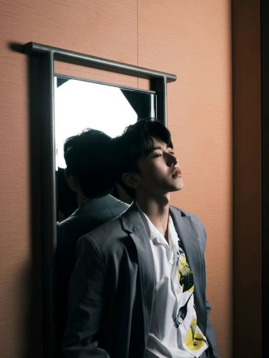

基本信息

| 姓名 | 蔡徐坤 |
|---|---|
| 民族 | 汉族 |
| 出生地 | 浙江温州 |
| 出生日期 | 1998年8月2日 |
| 星座 | 狮子座 |
| 血型 | A型 |
| 身高 | 184 |
| 职业 | 歌手、演员、音乐制作人 |
| 经纪公司 | 蔡徐坤工作室 |
| 代表作品 | 重生、情人、Home、迷、YOUNG、没有意外、蒙着眼、Wait Wait Wait、Pull Up、You Can Be My Girlfriend、Hand to get、It's you |
| 主要成就 |
第十五届MAHB年度先生盛典年度先生奖； 2019智族GQ年度人物盛典年度人气偶像奖； 中牙友好大使暨中牙杰出青年领袖人物； 2020TMEA音乐盛典年度最具号召力歌手、最具影响力创作歌手； 音乐盛典咪咕汇2020年度内地最佳男歌手、内地最受欢迎男歌手 |